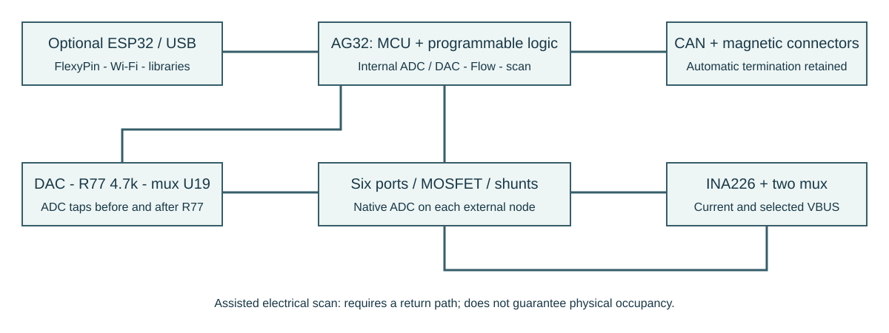
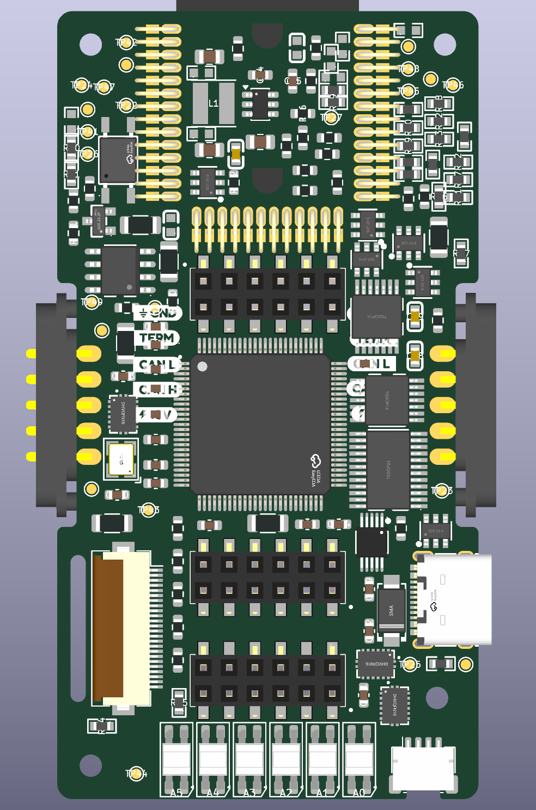
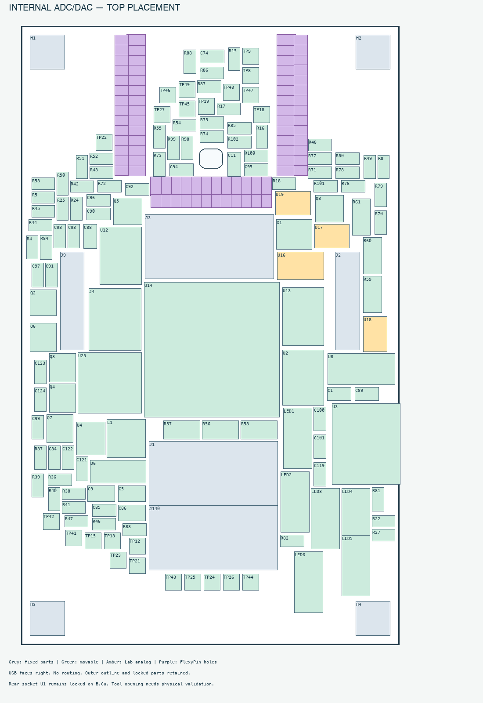

Contorno raccordato e accesso Qwiic
Angoli esterni R1,5 mm; raccordi delle rientranze magnetiche R0,6 mm. Scasso centrale Qwiic 3,3 × 1,25 mm, raccordato R0,3 mm; pad laterali preservati. Ingombro massimo 41,5 × 77,7 mm invariato. Nessun componente spostato, nessuna pista aggiunta, slot esistenti e regole di progetto invariati. La finestra nel case deve lasciare spazio anche alla spina completa: lo scasso PCB libera solo la parte centrale sotto l’imbocco. Compatibilità meccanica finale da provare con cavo e case reali. Nessun nuovo rilievo copper-edge; un tratto di serigrafia Qwiic intercetta il nuovo scasso e resta da rifinire.
Disegno del contorno e dettaglio Qwiic
Backbone: misure e scansione con AG32
28 ottobre 2026. ADC e DAC esterni eliminati; A0-A5, CAN, Qwiic, FlexyPin, LED e alimentazione conservati.

Correzioni applicate
- DAC0 AG32 pad29 su DAC_RAW; ADC pad15 misura DAC_RAW e pad16 DAC_LIMITED.
- R77 4,7k 0,1% tra le due letture; U13C ne mantiene il bypass, aperto durante la scansione.
- U19: tre indirizzi indipendenti su AG78/79/80; inhibit AG81 con pull-up R71. U13 bypass con pull-up R78.
- Sei ADC interni sulle porte dopo gli shunt. INA226 VBUS legge SHUNT_LOW_SELECTED attraverso U18.
- Rimossi U20-U24 e i relativi passivi: nessun nuovo chip.
Funzionamento e limiti
Il DAC interno è a 10 bit (~3,22mV per codice a 3,3V), gli ADC a 12 bit (~0,806mV nominali per codice). Sono risoluzioni, non accuratezza garantita. La tensione di riferimento segue VCORE: necessarie taratura e verifica del rumore. Non si ereditano le prestazioni del vecchio ADC esterno.
La scansione misura I=(V_RAW-V_LIMITED)/R77. La resistenza dei mux, le dispersioni, la dinamica ADC e il carico DAC vanno verificati. Con stimolo 0,3V e R77 4,7k la corrente ideale di cortocircuito è circa64µA; a3,3V circa0,70mA. Non è un limitatore di corrente attivo e non rende sicura qualsiasi prova su dispositivi sconosciuti.
Prima della scansione: disabilitare mux DAC, spegnere MOSFET, aprire bypass ESP e bypass R77, mettere le uscite AG/ESP in alta impedenza, impostare ADC e DAC; selezionare una porta e un percorso di ritorno controllato; abilitare stimolo, attendere assestamento e acquisire. Disabilitare stimolo prima di cambiare porta. I sensori alimentati esternamente richiedono una procedura separata. Firmware e HDL ancora da implementare.
L'INA misura i consumi ordinari; per lo stimolo debole si usa la caduta su R77, non sullo shunt0,1ohm. Scansione assistita: un ingresso isolato o flottante può apparire vuoto. La camera e il database possono integrare gli indizi elettrici; nessuna garanzia di riconoscimento universale.
Tre montaggi conservati
ESP_BASE: ESP obbligatorio, expander U25, niente AG o scansione. AG_BASE: supervisore AG e ADC nativi, sezione INA/mux/stimolo opzionale non montata, shunt0ohm. LAB: ADC/DAC interni + INA, mux, R77 e shunt0,1ohm; ESP opzionale. Non montare AG e U25 contemporaneamente. R78 resta montato in tutte le varianti.
Costo componenti per scheda
USD da listini salvati nella sessione, senza nuovo preventivo acquisti. Conversione indicativa1EUR=1,115USD. Inclusi40FlexyPin, due magnetici, LED, CAN, terminazione, Qwiic. Esclusi PCB, montaggio, test, IVA, trasporto e scarti.
| Lotto | ESP | Con Harwin USD | Esclusi Harwin USD | Esclusi Harwin EUR |
|---|
| 1 | Con ESP32 | $30.59 | $23.20 | €20.81 |
| 1 | Senza ESP32 | $25.51 | $18.13 | €16.26 |
| 10 | Con ESP32 | $27.59 | $20.49 | €18.37 |
| 10 | Senza ESP32 | $23.15 | $16.04 | €14.39 |
| 1000 | Con ESP32 | $21.21 | $14.21 | €12.75 |
| 1000 | Senza ESP32 | $17.68 | $10.68 | €9.58 |
Senza Harwin bisogna ancora aggiungere contatti e supporto sostitutivi: non è il costo di una scheda assemblata. Stock riportati dalla precedente lettura: disponibilità e prezzi da riconfermare prima dell'ordine.
Lotto 1: $7.09 risparmiati per scheda; Lotto 10: $6.30 risparmiati per scheda; Lotto 1000: $4.31 risparmiati per scheda rispetto alla Lab esterna precedente. Nessun chip aggiunto per predisporre la scansione.
Contorno compatto e corpi dei connettori
Dimensioni massime41,5x77,7mm. Due rientri laterali traY85,2 e109,2mm portano la larghezza locale a37,35mm. Area FR4 ridotta del4,24% rispetto alla revisione42x77,7mm; lunghezza invariata. I magnetici J2/J9 restano nelle pose originali; il bordo arriva alla fine dei pad e i corpi del modello orizzontale restano fuori. Tutti i pad sono sulla PCB.
USB-C sporgente sul lato destro. FPC sporgente a sinistra con pad di segnale e ancoraggi entro il bordo; Qwiic sul bordo destro con tutti i pad e i due ancoraggi sulla scheda. Qwiic e FPC non possono avere tutto il corpo sospeso senza lasciare fuori ancoraggi richiesti dalle impronte attuali. Posizionamento e vista3D controllati; tolleranze e resistenza meccanica da provare.
Il DRC segnala20clearance rame-bordo intenzionali, solo sui pad magnetici che arrivano al bordo. Nessuna regola globale ridotta o esclusione nascosta: concordare il rame a filo bordo con il fabbricante. Restano496connessioni da sbrogliare e le altre segnalazioni preesistenti di serigrafia/impronte.
Vista3D aggiornata

LED e connettori sul bordo
Ogni LED indica la configurazione della propria porta: LED1=A0, LED2=A1, LED3=A2, LED4=A3, LED5=A4, LED6=A5. I colori dipendono dal firmware, non sono ancora implementati. I sei LED sono su una sola fila, ordinati come le porte, con passo3,6mm: e il minimo pratico adottato per i corpi e le impronte attuali senza sovrapporli. Il passo differisce dalle colonne Harwin da2,54mm; la corrispondenza A0-A5 e indicata in serigrafia.
Qwiic J4 sul bordo destro, FPC J5 sul sinistro con uscita flat libera; USB-C resta a destra piu in basso, separata dai magnetici. Harwin, magnetici e socket ESP bloccato conservano le pose. Componenti mobili sul top. Il contorno attuale e41,5x77,7mm con rientri laterali; Harwin e magnetici rimangono fissi.
FPC Hirose FH12-24S-0.5SH(55), LCSC C202112,24contatti,passo0,5mm,cavo0,3mm,contatto inferiore. Espone11GPIO liberi:6,11,12,17,18,21,38,39,40,41,42, piu SDA/SCL condivisi con Qwiic (GPIO4/5),3,3V eGND. GPIO35-37 esclusi per PSRAM N8R8; GPIO45/46 non esportati per evitare vincoli di boot. GPIO39-42 condividono funzioni JTAG. Nessun circuito camera o LDO ripristinato. FPC diretto all'ESP: non funziona senza il modulo ESP inserito. Pinout completo.
Il connettore aggiunge circa$0,47 per scheda su10 e$0,39 su1000 dai listini salvati, incluso nei totali. Flat escluso.

Verifica
619 controlli di connettivita superati; ERC:0errori e292avvisi. DRC:612segnalazioni di serigrafia, dimensioni testo, anelli FlexyPin, courtyard mancanti e differenze librerie. Nessun cortocircuito o conflitto rame/courtyard rilevato;20clearance rame-bordo dei magnetici sono intenzionali e richiedono accordo col fabbricante.496elementi non connessi: PCB ancora da sbrogliare, posizionamento preliminare e accoppiamento magnetico/accesso flat da verificare fisicamente.
Schema PDF aggiornato · KiCad · BOM completa · Varianti · Pin AG32 · Verifica
Distinta completa e varianti
| Rif | Valore | LCSC | ESP_BASE | AG_BASE | LAB |
|---|
| C1 | 100nF | C1591 | FIT | FIT | FIT |
| C5 | 22uF | C45783 | FIT | FIT | FIT |
| C9 | 22uF | C45783 | FIT | FIT | FIT |
| C11 | 1uF | C128624 | FIT | FIT | FIT |
| C74 | 100nF | C1591 | FIT | FIT | FIT |
| C84 | 100nF/50V | C14663 | FIT | FIT | FIT |
| C85 | 100nF/50V | C14663 | FIT | FIT | FIT |
| C86 | 22uF | C45783 | FIT | FIT | FIT |
| C88 | 100nF | C14663 | FIT | FIT | FIT |
| C89 | 100nF | C14663 | FIT | FIT | FIT |
| C90 | 100nF | C14663 | DNP | FIT | FIT |
| C91 | 100nF | C14663 | DNP | FIT | FIT |
| C92 | 100nF | C14663 | DNP | FIT | FIT |
| C93 | 100nF | C14663 | DNP | FIT | FIT |
| C94 | 100nF | C14663 | DNP | FIT | FIT |
| C95 | 100nF | C14663 | DNP | FIT | FIT |
| C96 | 100nF | C14663 | DNP | FIT | FIT |
| C97 | 100nF | C14663 | DNP | FIT | FIT |
| C98 | 100nF | C14663 | DNP | FIT | FIT |
| C99 | 1uF | C15849 | DNP | FIT | FIT |
| C100 | 100nF | C14663 | DNP | FIT | FIT |
| C101 | 100nF | C14663 | DNP | FIT | FIT |
| C119 | 100nF | C14663 | FIT | DNP | DNP |
| C121 | 100nF | C14663 | DNP | DNP | FIT |
| C122 | 100nF | C14663 | DNP | DNP | FIT |
| C123 | 100nF | C14663 | DNP | DNP | FIT |
| C124 | 100nF | C14663 | DNP | DNP | FIT |
| D6 | SS54_C22452 | C22452 | FIT | FIT | FIT |
| J1 | M20-7810645R | C6585798 | FIT | FIT | FIT |
| J2 | FROM_PREVIOUS | C41361292 | FIT | FIT | FIT |
| J3 | M20-7810645R | C6585798 | FIT | FIT | FIT |
| J4 | SM04B-SRSS-TB(LF)(SN) | C160404 | FIT | FIT | FIT |
| J5 | FH12-24S-0.5SH(55) | C202112 | FIT | FIT | FIT |
| J9 | TO NEXT | C41361293 | FIT | FIT | FIT |
| J140 | M20-7810645R | C6585798 | FIT | FIT | FIT |
| L1 | 3.3uH | C39846848 | FIT | FIT | FIT |
| LED1 | SK6812MINI-E | C5149201 | FIT | FIT | FIT |
| LED2 | SK6812MINI-E | C5149201 | FIT | FIT | FIT |
| LED3 | SK6812MINI-E | C5149201 | FIT | FIT | FIT |
| LED4 | SK6812MINI-E | C5149201 | FIT | FIT | FIT |
| LED5 | SK6812MINI-E | C5149201 | FIT | FIT | FIT |
| LED6 | SK6812MINI-E | C5149201 | FIT | FIT | FIT |
| Q2 | AO3401A | C15127 | FIT | FIT | FIT |
| Q3 | AO6604 | C5182068 | FIT | FIT | FIT |
| Q4 | AO6604 | C5182068 | FIT | FIT | FIT |
| Q5 | AO6604 | C5182068 | FIT | FIT | FIT |
| Q6 | AO6604 | C5182068 | FIT | FIT | FIT |
| Q7 | AO6604 | C5182068 | FIT | FIT | FIT |
| Q8 | AO6604 | C5182068 | FIT | FIT | FIT |
| R4 | 470k | C114622 | FIT | FIT | FIT |
| R5 | 1k | C2907002 | FIT | FIT | FIT |
| R8 | 120R | C2906988 | FIT | FIT | FIT |
| R15 | 10k | C25804 | FIT | FIT | FIT |
| R16 | 10k | C25804 | FIT | FIT | FIT |
| R17 | 33R / ESP USB | C2909394 | FIT | FIT | FIT |
| R18 | 33R / ESP USB | C2909394 | FIT | FIT | FIT |
| R22 | 5.1k | C2907044 | FIT | FIT | FIT |
| R24 | 4.7k | C23162 | FIT | FIT | FIT |
| R25 | 4.7k | C23162 | FIT | FIT | FIT |
| R27 | 5.1k | C2907044 | FIT | FIT | FIT |
| R36 | 33k 1% | C4216 | FIT | FIT | FIT |
| R37 | 10k 1% | C25804 | FIT | FIT | FIT |
| R38 | 100k | C25803 | FIT | FIT | FIT |
| R39 | 100k | C25803 | FIT | FIT | FIT |
| R40 | 100k | C25803 | FIT | FIT | FIT |
| R41 | 100k | C25803 | FIT | FIT | FIT |
| R42 | 100k | C25803 | FIT | FIT | FIT |
| R43 | 100k | C25803 | FIT | FIT | FIT |
| R44 | 100k | C25803 | FIT | FIT | FIT |
| R45 | 100k | C25803 | FIT | FIT | FIT |
| R46 | 100k | C25803 | FIT | FIT | FIT |
| R47 | 100k | C25803 | FIT | FIT | FIT |
| R48 | 100k | C25803 | FIT | FIT | FIT |
| R49 | 100k | C25803 | FIT | FIT | FIT |
| R50 | 100k | C25803 | FIT | FIT | FIT |
| R51 | 100k | C25803 | FIT | FIT | FIT |
| R52 | 100k | C25803 | FIT | FIT | FIT |
| R53 | 100k | C25803 | FIT | FIT | FIT |
| R54 | 100k | C25803 | FIT | FIT | FIT |
| R55 | 100k | C25803 | FIT | FIT | FIT |
| R56 | 0.1R | C5123673 | FIT | FIT | FIT |
| R57 | 0.1R | C5123673 | FIT | FIT | FIT |
| R58 | 0.1R | C5123673 | FIT | FIT | FIT |
| R59 | 0.1R | C5123673 | FIT | FIT | FIT |
| R60 | 0.1R | C5123673 | FIT | FIT | FIT |
| R61 | 0.1R | C5123673 | FIT | FIT | FIT |
| R70 | 100k | C25803 | DNP | DNP | FIT |
| R71 | 100k | C25803 | DNP | DNP | FIT |
| R72 | 10k | C25804 | DNP | FIT | FIT |
| R73 | 10k | C25804 | DNP | FIT | FIT |
| R74 | 100k | C25803 | DNP | FIT | FIT |
| R75 | 100k | C25803 | DNP | FIT | FIT |
| R76 | 100k | C25803 | DNP | DNP | FIT |
| R77 | 4.7k 0.1% 25ppm | C513565 | DNP | DNP | FIT |
| R78 | 100k | C25803 | FIT | FIT | FIT |
| R79 | 4.7k | C23162 | DNP | DNP | FIT |
| R80 | 4.7k | C23162 | DNP | DNP | FIT |
| R81 | 22R DNP / AG USB | C23345 | DNP | DNP | DNP |
| R82 | 22R DNP / AG USB | C23345 | DNP | DNP | DNP |
| R83 | 10k | C25804 | DNP | FIT | FIT |
| R84 | 10k | C25804 | DNP | FIT | FIT |
| R85 | 1k | C21190 | DNP | FIT | FIT |
| R86 | 1k | C21190 | DNP | FIT | FIT |
| R87 | 1k | C21190 | DNP | FIT | FIT |
| R88 | 1k | C21190 | DNP | FIT | FIT |
| R98 | 0R / ESP-only | C21189 | FIT | DNP | DNP |
| R99 | 0R / ESP-only | C21189 | FIT | DNP | DNP |
| R100 | 0R / ESP-only | C21189 | FIT | DNP | DNP |
| R101 | 0R / ESP-only | C21189 | FIT | DNP | DNP |
| R102 | 0R / ESP-only | C21189 | FIT | DNP | DNP |
| U1 | ESP32-S3-WROOM-1_1U_FlexyPin_Socket | C2913201 | FIT | FIT | FIT |
| U2 | SN65HVD230DR | C12084 | FIT | FIT | FIT |
| U3 | HC-TYPE-C-16P-01A | C2894897 | FIT | FIT | FIT |
| U4 | TPS562201DDCR | C90061 | FIT | FIT | FIT |
| U8 | G3VM-61VY3 | C2152318 | FIT | FIT | FIT |
| U12 | SN74CBTLV3125PWR | C406866 | FIT | FIT | FIT |
| U13 | SN74CBTLV3125PWR | C406866 | FIT | FIT | FIT |
| U14 | AG32VF407VGT6 | C5336269 | DNP | FIT | FIT |
| U16 | INA226AIDGSR | C49851 | DNP | DNP | FIT |
| U17 | 74HC4051BQ,115 | C128429 | DNP | DNP | FIT |
| U18 | 74HC4051BQ,115 | C128429 | DNP | DNP | FIT |
| U19 | 74HC4051BQ,115 | C128429 | DNP | DNP | FIT |
| U25 | TCA9535PWR(UMW) | C22396388 | FIT | DNP | DNP |
| X1 | 20MHz | C390499 | DNP | FIT | FIT |